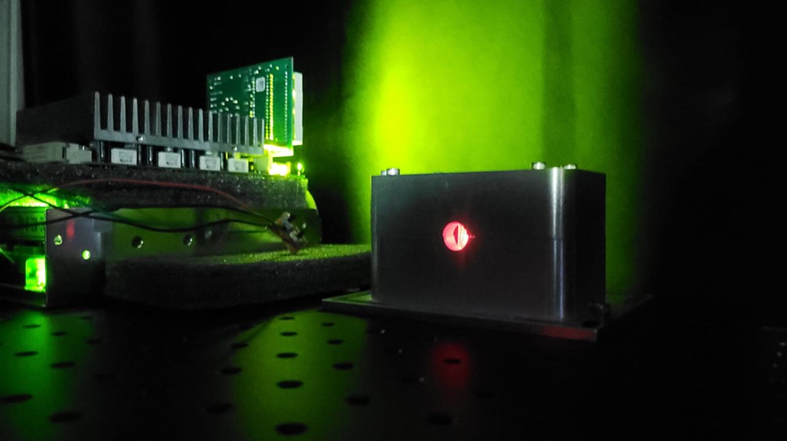
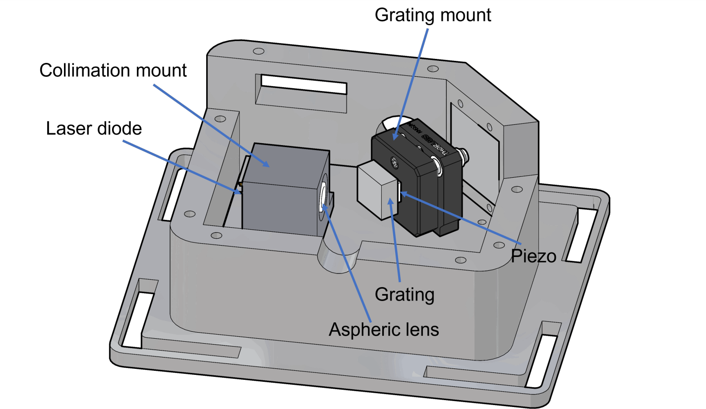

External Cavity Diode Laser
Precision Tuning for Atomic Physics and Metrology
1. Introduction
An External Cavity Diode Laser (ECDL) is a type of laser system that employs an external cavity, or optical feedback mechanism, to enhance its performance characteristics. In contrast to conventional diode lasers that rely solely on internal feedback, ECDLs utilize an external cavity, typically created using reflective components like diffraction gratings or mirrors. This provides a high level of control over the laser's output characteristics.
In the field of Atomic, Molecular, and Optical (AMO) physics, ECDLs play a crucial role due to their numerous advantages, including a narrow linewidth, wide wavelength tunability, frequency stability, and cost-effectiveness. These lasers have become essential in a wide range of applications, including high-precision spectroscopy, laser cooling, and the investigation of coherent atomic processes.

2. Construction and Opto-mechanical Design
The opto-mechanical design of our ECDL is carefully engineered to ensure versatility, stability, and precision. The system comprises several key components, including a collimation mount for accommodating various wavelength laser diodes without requiring design modifications. The casing is constructed from 10mm thick aluminium to provide high rigidity and vibrational stability.
Alignment Stability
The laser diode (Thorlabs L852H1) and collimation lens are positioned on a shared optical axis to reduce the influence of ambient temperature fluctuations.
Thermal Management
Implemented active thermal control using a Peltier TEC and a 10K thermistor, ensuring cavity length stability against environmental changes.
We use a Thorlabs GH13-18V diffraction grating (1800 lines/mm) with 10% diffraction efficiency at 852 nm. The grating is glued over a PZT chip on a kinetic mirror mount, enabling fine-tuning of the external cavity. The current design features a 35mm cavity length, providing narrow linewidth output suitable for cold atom experiments.

3. Acknowledgement
I wish to express my sincere appreciation to my supervisor, Asst. Prof. Dr. Santra (IIT Delhi), for his consistent guidance and encouragement. His support gave me the confidence to explore and develop a deep understanding of experimental laser physics. I would also like to thank Mr. Aditya Choudhary, Kamalkant, and the PhD scholars of the CAQT Lab for their assistance.